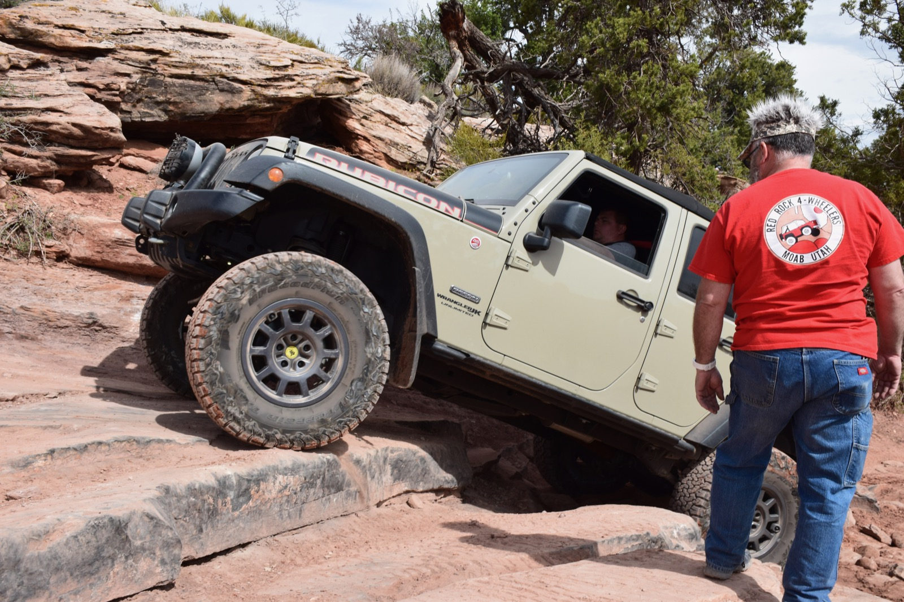
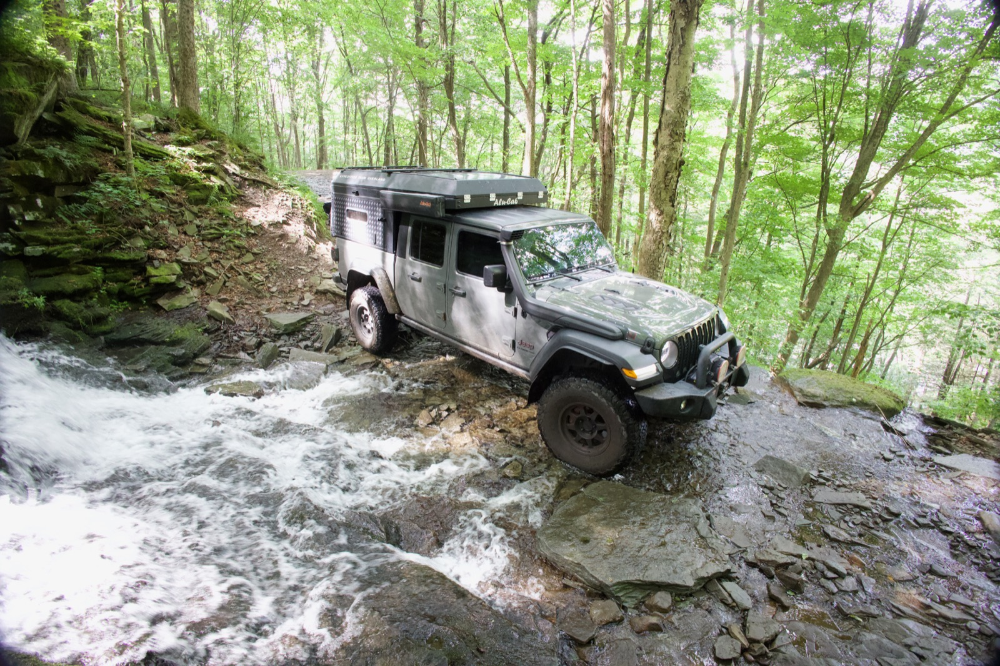
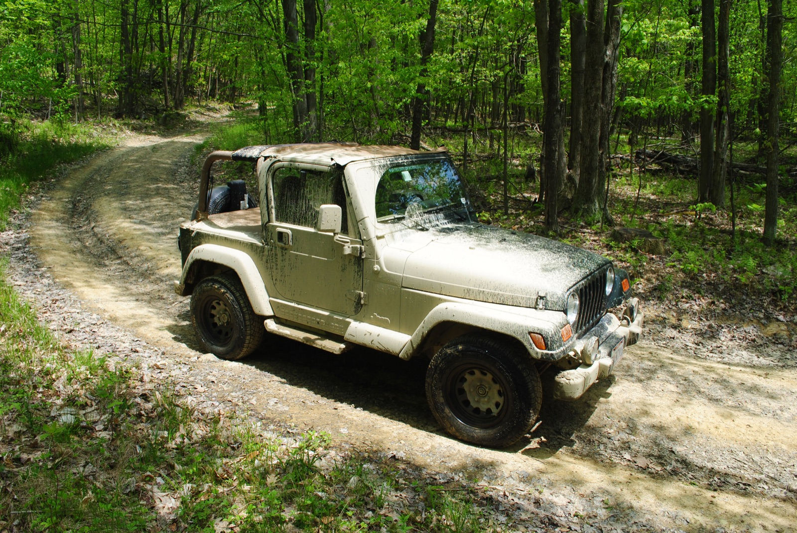

Wild Places
Mountain trails, remote backroads, national parks, dispersed camps, and four-wheel-drive routes from Moab to the Adirondacks.
New on YouTube: watch the latest trail footage (opens in new tab)

For me, overlanding has never been about simply getting from one place to another. It is about everything that happens between them.
I am Robert Frank, founder of Expedition Team Overland, a family-focused adventure and overland project built around exploring North America by vehicle and documenting the places, stories, and experiences we discover along the way.
My interests bring together Jeeps, aviation, history, photography, travel, mapping, and the logistics behind a great expedition. As an airline captain, planning and preparation are naturally part of how I approach an adventure. The destination matters, but so do the route, the equipment, the vehicle, and every interesting place between Point A and Point B.

ETO is not about seeing how extreme we can make a trip. The philosophy is simpler:
Explore farther.
Find interesting places.
Learn their stories.
Enjoy the journey getting there.

Jeeps have been part of the story from the beginning, starting with a 2002 Wrangler Sahara and continuing through several generations of Wranglers and purpose-built expedition vehicles.
Today, the centerpiece is a heavily modified 2020 Jeep Gladiator Rubicon. Its AEV, ARB, WARN, Method Race Wheels, BFGoodrich, Falcon, Clayton Off Road, Tom Woods, and Yukon Gear & Axle equipment supports long-distance travel and confident trail capability.
The objective is not to build the biggest Jeep possible. Every modification should make it more capable, more reliable, or better suited for the expedition ahead.
Explore the Gladiator BuildThe vehicle gets us there. The story gives us a reason to go.
Mountain trails, remote backroads, national parks, dispersed camps, and four-wheel-drive routes from Moab to the Adirondacks.
Historic landmarks, abandoned sites, Cold War installations, aviation locations, and overlooked stories along the highway.
Lighthouses across the Great Lakes and East Coast, including the research and preservation questions surrounding Penfield Reef Lighthouse.

Sometimes the adventure is hundreds of miles off the beaten path.
Sometimes it is only a few hours from home.
Expedition Team Overland has grown alongside my interest in historic preservation. One of the most ambitious projects I have begun researching is Penfield Reef Lighthouse in Fairfield, Connecticut, an offshore lighthouse dating to the 19th century.
Studying its original drawings, architecture, ownership history, restoration possibilities, marine logistics, and future uses has expanded the idea of an expedition beyond simply visiting a historic place.
Can we help preserve one of these places for the next generation?
At its heart, Expedition Team Overland is about creating experiences and memories. Some trips are planned for months. Others begin with an unusual place on a map and one simple question: What is out there?
From a Jeep trail in Utah to a lighthouse standing alone in Long Island Sound, there is always another road, another piece of history, and another story waiting to be discovered.



The journey is the expedition.